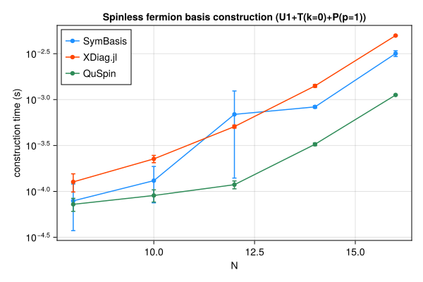
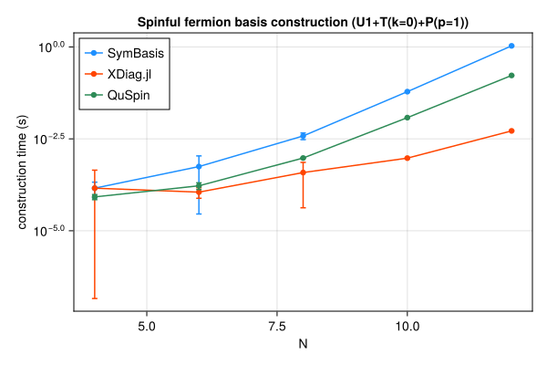
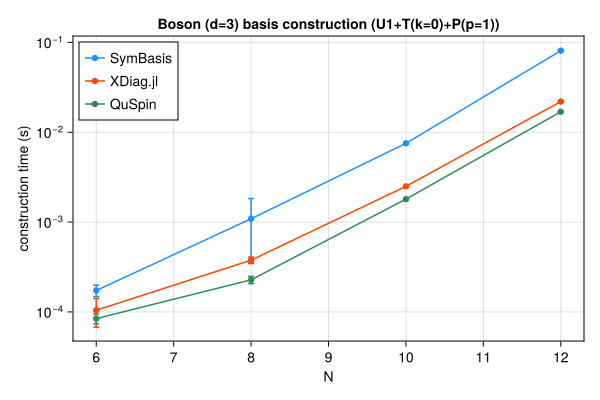

Symmetry-resolved basis construction and representative-state lookup speed, compared against XDiag.jl and QuSpin. SymBasis is benchmarked against its own dev checkout; XDiag.jl and QuSpin are whatever their latest released versions were at the time this page was generated. Regenerated automatically on every SymBasis release.
Threads are left at each library's own defaults (JULIA_NUM_THREADS=auto, OMP_NUM_THREADS unset) rather than pinned to 1 – these numbers reflect out-of-the-box performance, not a strictly single-threaded comparison.
Sweep: BENCH_SWEEP=quick
plot_construction("spin", "Spin-1/2")
| N | config | dim | SymBasis | XDiag | QuSpin | XDiag/SymBasis | QuSpin/SymBasis |
|---|
| 8 | U1 | 70 | 2.87e-05 ± 3.5e-05 s | 4.557e-06 ± 6.9e-06 s | 4.025e-05 ± 1.7e-05 s | 0.16x | 1.40x |
| 8 | U1+T(k=0) | 10 | 4.406e-05 ± 2.9e-05 s | 5.757e-05 ± 3.4e-05 s | 5.022e-05 ± 1.1e-05 s | 1.31x | 1.14x |
| 8 | U1+T(k=0)+P(p=1) | 8 | 0.000115 ± 7.4e-05 s | 0.0001546 ± 0.00011 s | 5.354e-05 ± 1.2e-05 s | 1.34x | 0.47x |
| 10 | U1 | 252 | 8.212e-05 ± 7e-05 s | 4.728e-06 ± 6.7e-06 s | 3.554e-05 ± 1.1e-05 s | 0.06x | 0.43x |
| 10 | U1+T(k=0) | 26 | 0.0001529 ± 0.00015 s | 0.0001014 ± 2.6e-05 s | 5.216e-05 ± 9.5e-06 s | 0.66x | 0.34x |
| 10 | U1+T(k=0)+P(p=1) | 16 | 0.0002031 ± 0.00021 s | 0.0002267 ± 2.1e-05 s | 6.668e-05 ± 1.5e-05 s | 1.12x | 0.33x |
| 12 | U1 | 924 | 0.0001657 ± 0.0002 s | 4.805e-06 ± 7e-06 s | 4.68e-05 ± 1.2e-05 s | 0.03x | 0.28x |
| 12 | U1+T(k=0) | 80 | 0.0001186 ± 9.5e-05 s | 0.0002735 ± 2.5e-05 s | 9.163e-05 ± 1.1e-05 s | 2.31x | 0.77x |
| 12 | U1+T(k=0)+P(p=1) | 50 | 0.0001458 ± 4.4e-05 s | 0.0004949 ± 1.4e-05 s | 0.000122 ± 1.6e-05 s | 3.39x | 0.84x |
| 14 | U1 | 3432 | 0.0005146 ± 0.00083 s | 5.644e-06 ± 7e-06 s | 6.708e-05 ± 9.5e-06 s | 0.01x | 0.13x |
| 14 | U1+T(k=0) | 246 | 0.0001858 ± 6.8e-05 s | 0.0008985 ± 3.1e-05 s | 0.0002229 ± 1.4e-05 s | 4.83x | 1.20x |
| 14 | U1+T(k=0)+P(p=1) | 133 | 0.0003281 ± 0.00014 s | 0.001341 ± 5.5e-05 s | 0.0003293 ± 1.3e-05 s | 4.09x | 1.00x |
| 16 | U1 | 12870 | 0.0003418 ± 0.00022 s | 1.091e-05 ± 1.9e-05 s | 0.0001611 ± 2e-05 s | 0.03x | 0.47x |
| 16 | U1+T(k=0) | 810 | 0.0004437 ± 3.1e-05 s | 0.003561 ± 3.5e-05 s | 0.0007378 ± 1.7e-05 s | 8.03x | 1.66x |
| 16 | U1+T(k=0)+P(p=1) | 440 | 0.0007401 ± 0.00012 s | 0.004435 ± 7.2e-05 s | 0.001122 ± 9.8e-06 s | 5.99x | 1.52x |
| N | config | nsamples | SymBasis | XDiag | QuSpin |
|---|
| 16 | U1+T(k=0)+P(p=1) | 10000 | 2.834e-07 ± 1.7e-09 s | N/A (no decoupled API) | 1.805e-07 ± 3.7e-09 s |
plot_construction("fermion", "Spinless fermion")

| N | config | dim | SymBasis | XDiag | QuSpin | XDiag/SymBasis | QuSpin/SymBasis |
|---|
| 8 | U1 | 70 | 2.975e-05 ± 3.5e-05 s | 4.302e-06 ± 6.8e-06 s | 5.243e-05 ± 1.4e-05 s | 0.14x | 1.76x |
| 8 | U1+T(k=0) | 9 | 9.22e-05 ± 6.3e-05 s | 5.631e-05 ± 2.8e-05 s | 6.396e-05 ± 1.2e-05 s | 0.61x | 0.69x |
| 8 | U1+T(k=0)+P(p=1) | 6 | 7.89e-05 ± 4.2e-05 s | 0.0001269 ± 2.8e-05 s | 7.231e-05 ± 1.2e-05 s | 1.61x | 0.92x |
| 10 | U1 | 252 | 0.000132 ± 0.00019 s | 4.622e-06 ± 6.4e-06 s | 5.164e-05 ± 1.2e-05 s | 0.04x | 0.39x |
| 10 | U1+T(k=0) | 26 | 0.0001328 ± 0.00013 s | 0.0002519 ± 0.00048 s | 7.741e-05 ± 1.1e-05 s | 1.90x | 0.58x |
| 10 | U1+T(k=0)+P(p=1) | 16 | 0.0001309 ± 5.6e-05 s | 0.000226 ± 2.1e-05 s | 9.025e-05 ± 1.4e-05 s | 1.73x | 0.69x |
| 12 | U1 | 924 | 0.0002472 ± 0.00038 s | 4.615e-06 ± 6.8e-06 s | 5.817e-05 ± 9e-06 s | 0.02x | 0.24x |
| 12 | U1+T(k=0) | 76 | 0.0001485 ± 4.6e-05 s | 0.0002988 ± 2.4e-05 s | 0.0001079 ± 2.2e-05 s | 2.01x | 0.73x |
| 12 | U1+T(k=0)+P(p=1) | 33 | 0.0006904 ± 0.00055 s | 0.000508 ± 1.9e-05 s | 0.0001183 ± 1.2e-05 s | 0.74x | 0.17x |
| 14 | U1 | 3432 | 0.0001346 ± 0.00012 s | 5.711e-06 ± 7e-06 s | 6.442e-05 ± 7.7e-06 s | 0.04x | 0.48x |
| 14 | U1+T(k=0) | 246 | 0.000465 ± 0.00028 s | 0.001044 ± 5.2e-05 s | 0.0002236 ± 1.1e-05 s | 2.25x | 0.48x |
| 14 | U1+T(k=0)+P(p=1) | 113 | 0.0008325 ± 2.7e-05 s | 0.00141 ± 4.9e-05 s | 0.000326 ± 1.1e-05 s | 1.69x | 0.39x |
| 16 | U1 | 12870 | 0.0003707 ± 0.00014 s | 7.552e-06 ± 9.3e-06 s | 0.0001511 ± 1.2e-05 s | 0.02x | 0.41x |
| 16 | U1+T(k=0) | 809 | 0.001272 ± 9.9e-05 s | 0.00411 ± 3.2e-05 s | 0.0007326 ± 1e-05 s | 3.23x | 0.58x |
| 16 | U1+T(k=0)+P(p=1) | 422 | 0.003174 ± 0.00023 s | 0.004981 ± 5.3e-05 s | 0.001123 ± 9.9e-06 s | 1.57x | 0.35x |
| N | config | nsamples | SymBasis | XDiag | QuSpin |
|---|
| 16 | U1+T(k=0)+P(p=1) | 10000 | 1.81e-06 ± 3.2e-09 s | N/A (no decoupled API) | 1.873e-06 ± 1.6e-08 s |
plot_construction("spinful_fermion", "Spinful fermion")

| N | config | dim | SymBasis | XDiag | QuSpin | XDiag/SymBasis | QuSpin/SymBasis |
|---|
| 4 | U1 | 36 | 4.833e-05 ± 6.9e-05 s | 5.838e-06 ± 9.2e-06 s | 5.875e-05 ± 1.6e-05 s | 0.12x | 1.22x |
| 4 | U1+T(k=0) | 10 | 0.0001019 ± 5.3e-05 s | 3.294e-05 ± 3.1e-05 s | 7.107e-05 ± 1.1e-05 s | 0.32x | 0.70x |
| 4 | U1+T(k=0)+P(p=1) | 6 | 0.0001443 ± 6.6e-05 s | 0.000144 ± 0.0003 s | 8.348e-05 ± 1.3e-05 s | 1.00x | 0.58x |
| 6 | U1 | 400 | 0.0002139 ± 0.00016 s | 5.168e-06 ± 9.2e-06 s | 7.273e-05 ± 1.3e-05 s | 0.02x | 0.34x |
| 6 | U1+T(k=0) | 68 | 0.0002184 ± 4.7e-05 s | 9.967e-05 ± 0.00018 s | 0.0001318 ± 1.5e-05 s | 0.46x | 0.60x |
| 6 | U1+T(k=0)+P(p=1) | 38 | 0.000558 ± 0.00053 s | 0.0001126 ± 3.6e-05 s | 0.0001673 ± 3.5e-05 s | 0.20x | 0.30x |
| 8 | U1 | 4900 | 0.0006799 ± 0.00018 s | 5.518e-06 ± 9.4e-06 s | 0.0001245 ± 9.8e-06 s | 0.01x | 0.18x |
| 8 | U1+T(k=0) | 618 | 0.002088 ± 0.00036 s | 0.0001265 ± 3.4e-05 s | 0.000529 ± 1.6e-05 s | 0.06x | 0.25x |
| 8 | U1+T(k=0)+P(p=1) | 318 | 0.003794 ± 0.00078 s | 0.0003838 ± 0.00034 s | 0.0009528 ± 1.1e-05 s | 0.10x | 0.25x |
| 10 | U1 | 63504 | 0.008105 ± 0.00033 s | 7.895e-06 ± 1.6e-05 s | 0.001058 ± 1e-05 s | 0.00x | 0.13x |
| 10 | U1+T(k=0) | 6352 | 0.03448 ± 0.0012 s | 0.003569 ± 0.0067 s | 0.006447 ± 1.3e-05 s | 0.10x | 0.19x |
| 10 | U1+T(k=0)+P(p=1) | 3212 | 0.06073 ± 0.0015 s | 0.0009464 ± 3.7e-05 s | 0.01194 ± 4e-05 s | 0.02x | 0.20x |
| 12 | U1 | 853776 | 0.13 ± 0.019 s | 6.383e-06 ± 8.6e-06 s | 0.01536 ± 0.00011 s | 0.00x | 0.12x |
| 12 | U1+T(k=0) | 71188 | 0.6268 ± 0.018 s | 0.002175 ± 5.6e-05 s | 0.08972 ± 0.0003 s | 0.00x | 0.14x |
| 12 | U1+T(k=0)+P(p=1) | 35694 | 1.069 ± 0.024 s | 0.005209 ± 0.0001 s | 0.1677 ± 0.00082 s | 0.00x | 0.16x |
| N | config | nsamples | SymBasis | XDiag | QuSpin |
|---|
| 12 | U1+T(k=0)+P(p=1) | 10000 | 1.324e-05 ± 2.6e-08 s | N/A (no decoupled API) | 2.222e-06 ± 5.6e-09 s |
plot_construction("boson", "Boson (d=3)")

| N | config | dim | SymBasis | XDiag | QuSpin | XDiag/SymBasis | QuSpin/SymBasis |
|---|
| 6 | U1 | 141 | 0.000105 ± 0.00013 s | 4.988e-06 ± 6.8e-06 s | 5.816e-05 ± 1.3e-05 s | 0.05x | 0.55x |
| 6 | U1+T(k=0) | 26 | 0.000123 ± 6.1e-05 s | 6.003e-05 ± 2.8e-05 s | 8.813e-05 ± 2.3e-05 s | 0.49x | 0.72x |
| 6 | U1+T(k=0)+P(p=1) | 18 | 0.0001731 ± 2.5e-05 s | 0.0001043 ± 3.7e-05 s | 8.423e-05 ± 1e-05 s | 0.60x | 0.49x |
| 8 | U1 | 1107 | 0.0002127 ± 5.6e-05 s | 6.417e-06 ± 6.9e-06 s | 9.709e-05 ± 1.2e-05 s | 0.03x | 0.46x |
| 8 | U1+T(k=0) | 142 | 0.0004892 ± 5.4e-05 s | 0.0002506 ± 3.7e-05 s | 0.0002303 ± 1.7e-05 s | 0.51x | 0.47x |
| 8 | U1+T(k=0)+P(p=1) | 84 | 0.001088 ± 0.00074 s | 0.0003764 ± 3.2e-05 s | 0.0002275 ± 2.1e-05 s | 0.35x | 0.21x |
| 10 | U1 | 8953 | 0.001119 ± 0.00015 s | 1.179e-05 ± 1.1e-05 s | 0.000289 ± 1.1e-05 s | 0.01x | 0.26x |
| 10 | U1+T(k=0) | 902 | 0.004741 ± 0.00065 s | 0.001949 ± 4.4e-05 s | 0.001493 ± 1.1e-05 s | 0.41x | 0.31x |
| 10 | U1+T(k=0)+P(p=1) | 486 | 0.00752 ± 0.0002 s | 0.002497 ± 2.4e-05 s | 0.0018 ± 1.4e-05 s | 0.33x | 0.24x |
| 12 | U1 | 73789 | 0.01175 ± 0.0015 s | 2.834e-05 ± 9.7e-06 s | 0.00208 ± 1.2e-05 s | 0.00x | 0.18x |
| 12 | U1+T(k=0) | 6166 | 0.05158 ± 0.0015 s | 0.0183 ± 3.7e-05 s | 0.01409 ± 2.7e-05 s | 0.35x | 0.27x |
| 12 | U1+T(k=0)+P(p=1) | 3179 | 0.08076 ± 0.0017 s | 0.02192 ± 0.00016 s | 0.01688 ± 2.3e-05 s | 0.27x | 0.21x |
| N | config | nsamples | SymBasis | XDiag | QuSpin |
|---|
| 12 | U1+T(k=0)+P(p=1) | 10000 | 6.776e-06 ± 1.7e-08 s | N/A (no decoupled API) | 3.183e-07 ± 4.2e-09 s |